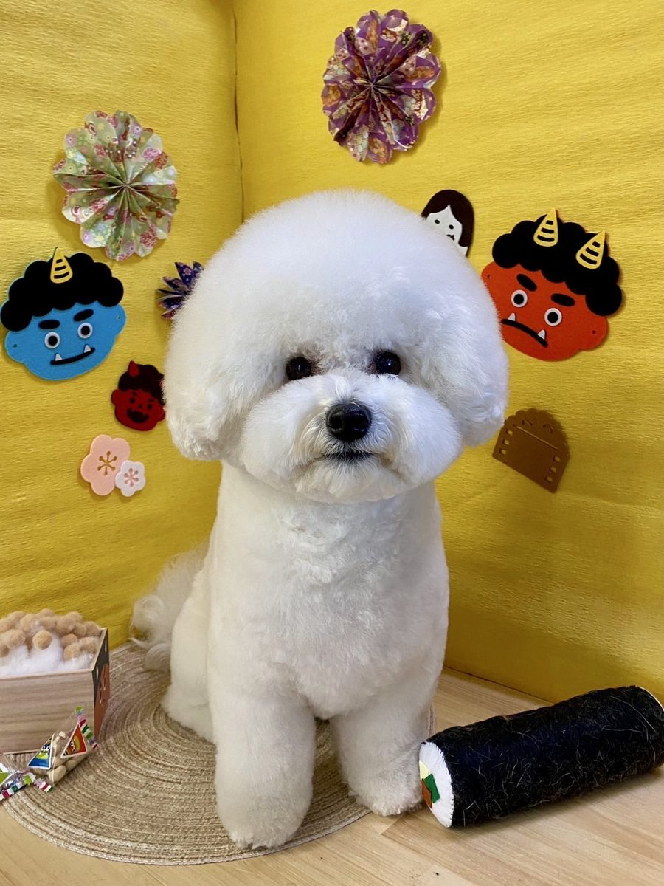
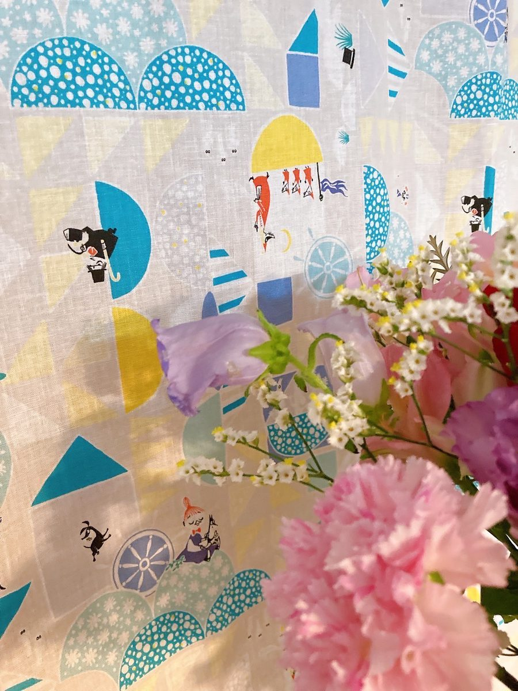
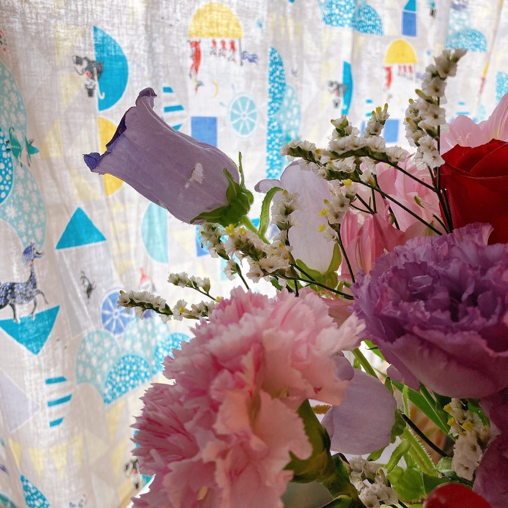
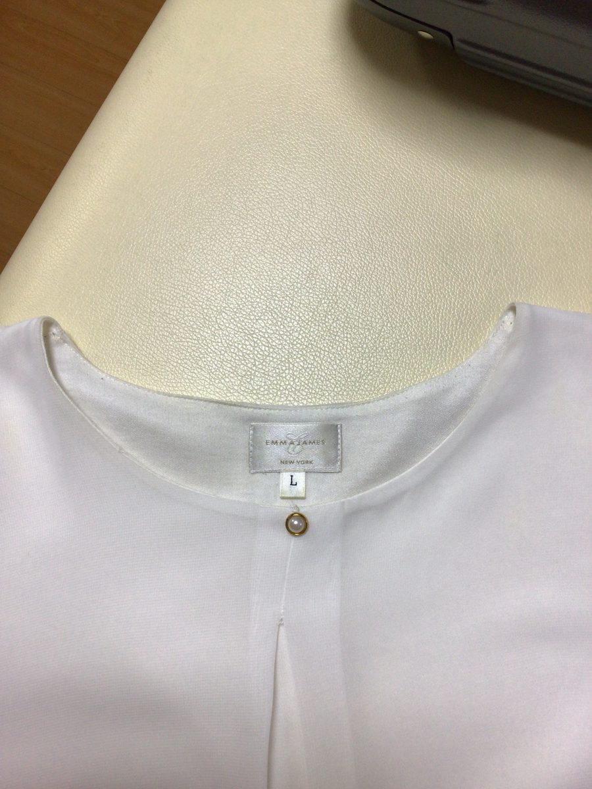
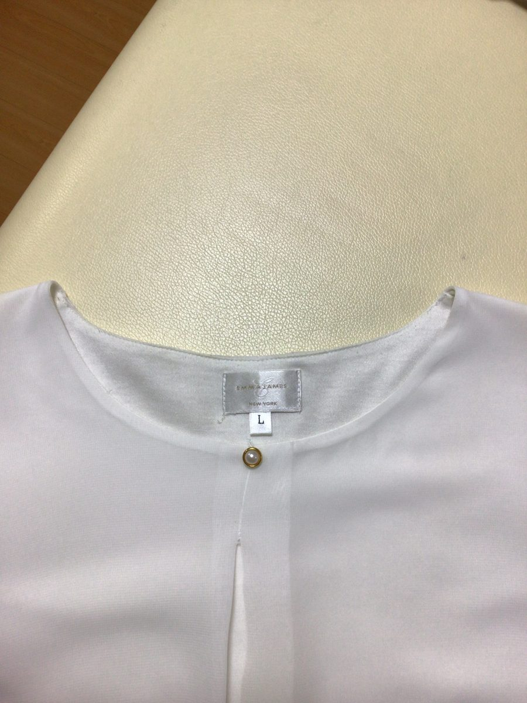
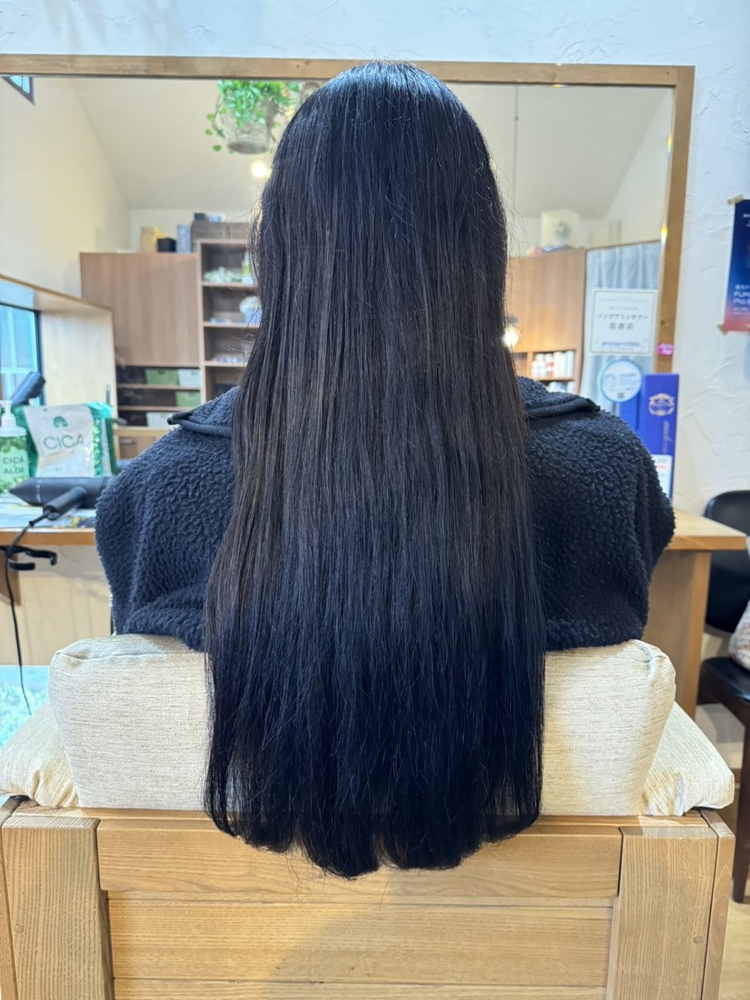
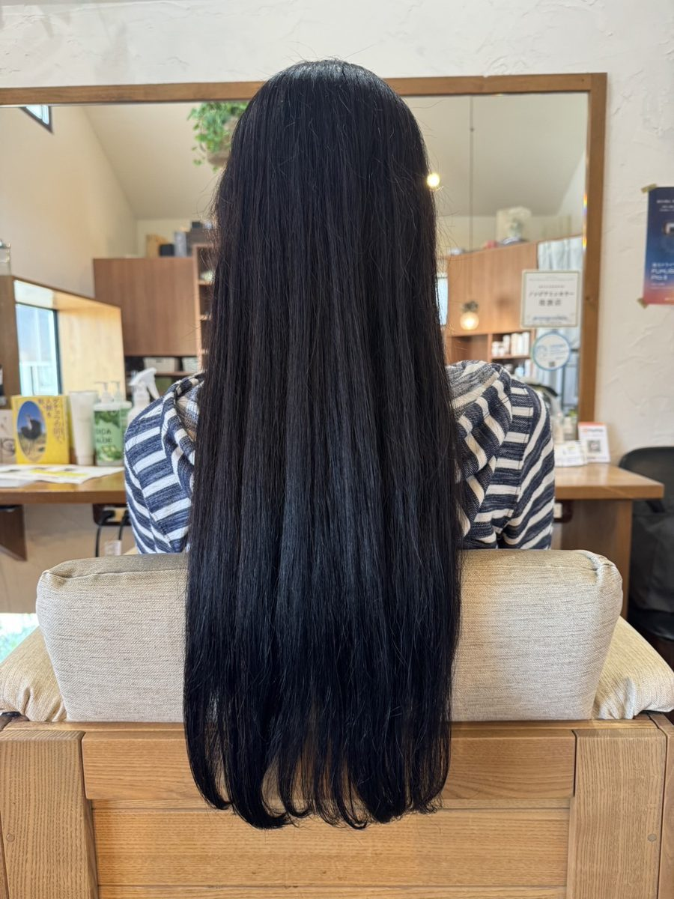

USE
何に使いたいですか?
使い道を選ぶと、使い方の例と、実際にお使いの方の事例をご覧いただけます。
シャンプー・耳掃除・水飲み
施設の方は企業様向け:介護・福祉・看護
10業種の活用例をご紹介
TECHNOLOGY
研究から生まれた、水と空気の超粉砕技術
代表・林は技術者として長年、水と空気の力を最大限に引き出す独自の生成技術を研究してきました。
ヒントは、自然の滝。落ちる水が細かく砕けるとき、水と空気が同時に細かくなる。その現象を手がかりに、水そのものを細かく粉砕しながら空気を巻き込む方式を形にしました。
見えないほど小さな気泡を含んだ水を、数字と実験写真でご紹介しています。
- 平均気泡径約60nm当社資料掲載の実測例/動的光散乱法(DLS)
- 気泡個数濃度約5,000万個/cc当社資料掲載の実測例/ナノバブル測定装置
- 100ccを3分循環した場合約15億個/cc当社資料掲載の実測例/100cc・3分循環
当社測定条件による実測例です。数値は使用条件や測定条件によって異なります。
PRODUCTS
製品紹介
手軽に始められるMOKOと、水をつくる機器「りふれ」シリーズ。価格はすべて税込です。

公式直販
MOKO MOKO DAILY WATER
ペットと暮らす空間に寄り添う、200mLのデイリーウォーター。毎日の空間消臭や、花粉が気になる季節の空間ケアに。
1,078円(税込)/200mL
※「花粉が気になる季節の空間ケア」は利用シーンを表す表現です。花粉の除去・無害化などの性能を示すものではありません。

CASES
使い道と事例
実際にお使いの方から寄せられた写真と声の一部です。撮影の条件は事例ごとに異なります。
ペット
りふれシャワーで洗ったワンちゃん

「ふわふわが持続していて、たくさん撫でてるのに毛もよれない」
ペットケアの事例を見る
植物
花瓶の水に使った切り花


「たった一晩でぴーん」
植物の事例を見る
洗浄
衣類の襟の汗染み


「襟の汗染みがキレイに」
洗浄の事例を見る
美容
美容室での仕上がり


「仕上がりの毛先の柔らかさ、指通りが違いました」
美容の事例を見るお客様の声
りふれの方が色が濃く出ました!
出汁が少しの材料で濃く取れる。
紅茶専門店でのご利用(料理・飲み物)
操作が楽!スイッチがフットスイッチだけというのがGOOD!
トリミングでのご利用(りふれシャワー)
水で何度か拭いてたら、ボツボツまで綺麗に取れてしまいびっくり!!
美容室の椅子の拭き掃除
※お客様の声は個人の感想です。使用環境・使用方法などにより、感じ方や結果は異なります。
代理店の皆さまへ
新たな代理店募集は行っていません。具体的な移行やお取扱いは個別にご案内します。